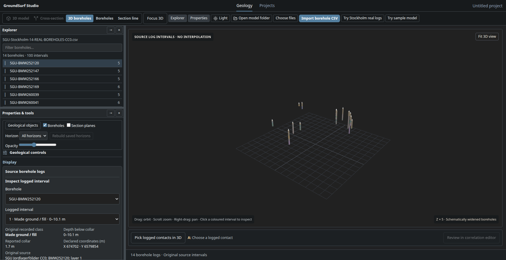
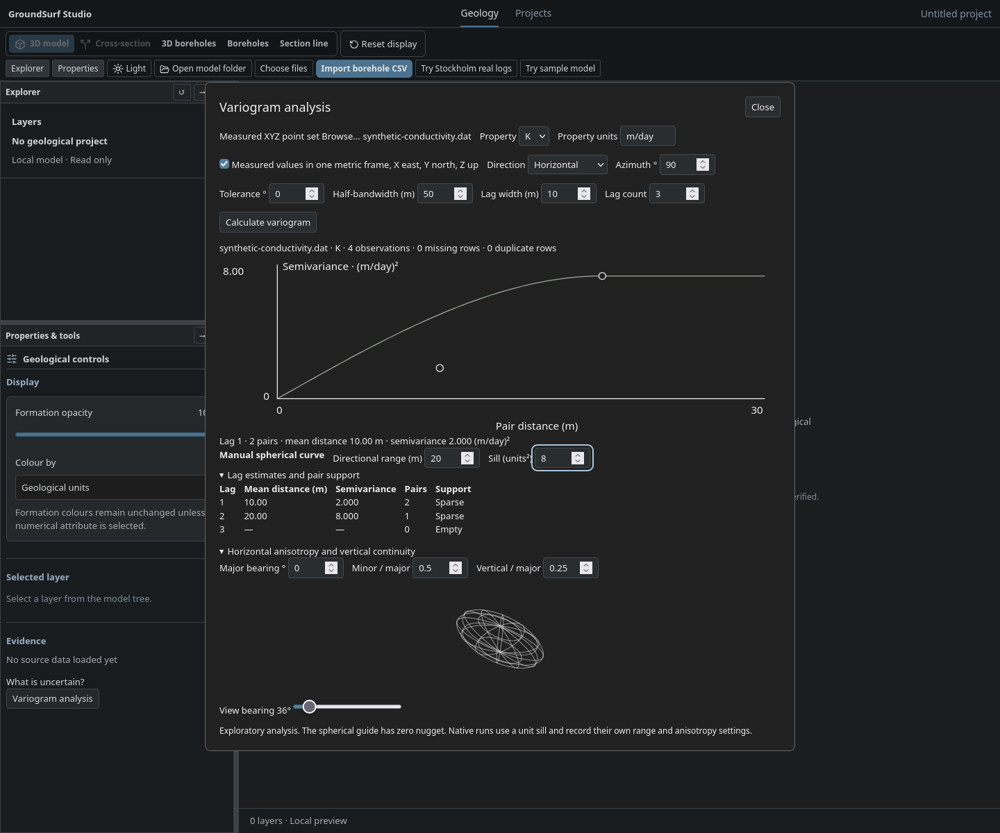
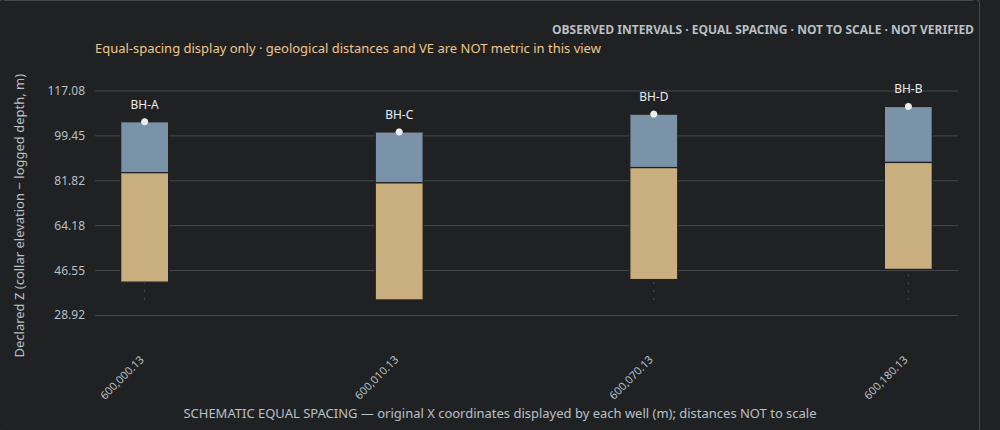

Real borehole logs
Import logged intervals, inspect depth and lithology, or explore the built-in example of 14 real Stockholm SGU logs (CC0).
Import boreholes. Draw correlations. Explore 3D geological interpretations. Keep the original evidence separate from what you infer.
A local-first workspace for geologists. No account or modelling server. Open in your browser or explore the optional Ubuntu desktop edition.
Free public beta · 1.33 MB HTML · Firefox & Chromium tested on Ubuntu · Release notes ↗

Dockable workspace with reported Stockholm logs — not an independently verified geological model.
What we observed and what we interpret should never be confused.
The principle behind GroundSurf StudioTHE WORKBENCH
Local data, geological interpretation, spatial statistics and clearly labelled uncertainty.
Import logged intervals, inspect depth and lithology, or explore the built-in example of 14 real Stockholm SGU logs (CC0).
Connect exact logged contacts in sections. Use horizontal zoom, metric vertical exaggeration, or clearly marked schematic spacing.
Review multiple manually proposed surfaces together. See their limits and unsupported connections rather than filling gaps silently.
Inspect geometrical crossings, intended upper/lower order and conditional thickness within strictly valid overlapping areas.
Construct bounded conceptual units, explore conservative fault scenarios and prepare numerical grids for property modelling.
Analyse measured spatial variability, inspect compatible simulation archives and calculate conditional uncertainty maps. Native simulations require desktop workers.
OPTIONAL DESKTOP PREVIEW
Ubuntu 24.04 amd64 experimental package. Optional separately installed, hash-checked SGeMS Workbench 0.4.5 GsTL workers enable ordinary kriging, SGSIM and SISIM without Wine. The workers are not bundled. See the setup guide.
The extracted package and sandboxed renderer were tested on Ubuntu; package-manager upgrade and other operating systems are not yet verified. The browser edition does not run native workers.

A NATURAL WORKFLOW
Open a local CSV or try the real Swedish demonstration data. The source records remain yours.
Choose contacts with the mouse; preserve which borehole and logged boundary supports each proposal.
View provisional surfaces together, check geometry and save a complete project ZIP. Nothing is approved automatically.
Download the same application as one HTML file. Open it locally and continue without internet access.

LOCAL BY DESIGN
The portable Studio runs its browser-compatible calculations locally. The optional desktop edition also runs supported native calculations locally. It does not require an account, an online model database or uploading your borehole files to a GroundSurf server.
Read about privacy & local filesA PUBLIC EXPERIMENT
Studio is a conceptual geological interpretation tool, not certified geological modelling software. Derived surfaces, thickness and volume are hypothetical until independently reviewed. Browser tests have passed on Ubuntu; Windows and macOS need further testing. Probabilities are conditional on the selected model and limited simulation ensemble.
GROUND SURF · OPEN EXPLORATION